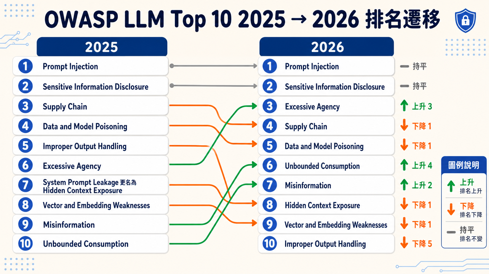
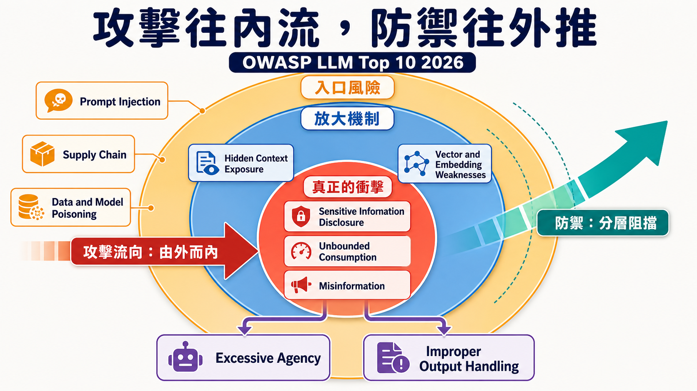

七千七百一十四起真實事件，OWASP GenAI Security Project 第一次沒有只靠社群投票決定這份榜單，而是把過去十年業界公認最該提防的風險，拿去對真實資料庫核對一遍。結果，Prompt Injection——社群票選的第一名——被真實事件記錄狠狠打了臉：單看事件數量，它甚至排不進前十。
這不是說 Prompt Injection 不重要了。恰恰相反，這是防禦生效的副作用：團隊拚命堵這個洞，能成功利用、又留下痕跡進到公開資料庫的案例因此變少，公開統計因而低估了真正的風險密度。攻擊面本身沒有消失——只要模型還在讀未經信任的輸入，這個入口就一直存在。所以最終名次上，Prompt Injection 依然穩坐第一，但理由已經從「大家都怕」變成「這是唯一無法被架構性消滅、只能靠圍堵的攻擊面」。
方向相反的例子是 Misinformation：社群投票把它放在偏後段，事件記錄卻顯示傷害比想像中普遍。當模型講得流暢、語氣自信，人類與下游系統都傾向直接相信、直接行動，一句錯誤輸出很容易變成一個錯誤決策。這正是這次改版最有意思的地方——票選權重佔七成五，事件證據佔兩成五，項目組刻意讓證據只能小幅撼動排名而非全盤推翻多年累積的實務判斷，但落差夠大的地方，名次還是被拉動了。

三層同心圓：風險不是十個孤島
理解 2026 版的關鍵，是先丟開「十條各自獨立的清單」這個直覺。官方用一張同心圓圖重新定位了十個風險彼此的關係：外圈是入口（Prompt Injection、Supply Chain、Data and Model Poisoning），中圈是放大機制（Hidden Context Exposure、Vector and Embedding Weaknesses），核心才是真正的衝擊（Sensitive Information Disclosure、Unbounded Consumption、Misinformation）。Excessive Agency 和 Improper Output Handling 則被畫在圖的下緣，負責把核心的衝擊，重新推回現實世界——一個是「模型能做什麼」，一個是「模型輸出被誰、怎麼用」。
攻擊沿著這張圖往內流動，防禦則該往外推——這句話本身就是這次改版想傳達的防禦哲學：別再妄想造出一個騙不倒的模型，把系統設計成模型被騙之後，重要的東西也不會壞。

入口：模型分不清「指令」和「資料」
Prompt Injection 之所以無解，根源是一句簡單到近乎荒謬的技術事實：LLM 把系統提示、使用者輸入、檢索回來的文件、工具回傳的結果全部塞進同一條 token 串流，沒有任何架構層級的機制可以標記「這段是指令、那段只是資料」。所以攻擊不需要人類看得懂，不需要來自使用者，甚至不需要在畫面上可見——藏在圖片的像素雜訊裡、藏在零寬度 Unicode 字元裡，都能奏效。
三個部署時特性讓這件事更糟：模型會把系統提示、記憶體、檢索內容當同一個信任層級處理（context-window pooling）；一次成功的注入可以寫進長期記憶或向量庫，汙染之後每一次的對話（memory persistence）；一旦模型的輸出可以驅動工具呼叫，攻擊的破壞半徑就從聊天視窗擴大到工具能碰到的任何系統（agentic execution）。NIST、NCSC 與多篇 2025 年的研究都得出同一個結論：目前沒有可靠的防治機制。文件因此直接把立場攤開——防禦不該是攔截式的，而該是架構式的：假設注入一定會成功，然後設計一套系統，讓成功的注入也造不成災。
這條路徑一路指向 Excessive Agency：注入是輸入端的破口，但真正決定傷害有多大的，是模型手上被授予了多少功能、多少權限、多少自主行動的空間。Meta AI 提出的「Rule of Two」把這個判斷簡化成一條防線——同時具備「碰得到未信任輸入」「碰得到敏感資料」「能改變狀態或對外通訊」三者中任兩項的 agent，就該被視為高風險，需要人工核准或明確的殘餘風險評估。這也是 Excessive Agency 從 2025 年第六名跳到 2026 年第三名、成為本次排名變動最大項目的原因：不是這個風險變新了，而是 agentic 部署的普及，讓「權限開太大」第一次有了足夠密度的真實災情可以佐證。
Supply Chain 和 Data and Model Poisoning 是另外兩個入口，但攻擊的是模型「出生」前的那一段。兩者在 2026 年名次都各往後退了一位（Supply Chain 第三退到第四、Data and Model Poisoning 第四退到第五），文件並未暗示它們變得比較不危險——真正的原因是 Excessive Agency 爬到第三名把整體排序往後擠了一格，這是同心圓裡「核心衝擊」風險密度上升，連帶壓縮其他入口類風險名次的排擠效應，不是這兩項本身被重新評估為低風險。前者處理的是你信任的第三方模型、adapter、轉換管線本身是否被動過手腳——slopsquatting 是個很能代表這個時代的案例：LLM coding assistant 會幻覺出根本不存在、但聽起來很合理的套件名稱，攻擊者提前把這些名字註冊起來，等著開發者或另一個 AI agent 信以為真去安裝。後者則揭露一個違反直覺的數字：不論資料集多大，只要精心挑選兩百五十份文件植入訓練或微調資料，就足以在六億到一百三十億參數規模的模型裡種下後門——規模不再是防禦。
放大機制：讓小問題變大問題的兩個齒輪
Hidden Context Exposure 是這次改版裡改名幅度最大的項目，前身是 System Prompt Leakage，但範圍被明確擴大成：任何不該被使用者看見、卻可能被推論或還原出來的隱藏上下文——系統提示、工具清單與其參數結構、內部決策邏輯、輸出格式規則。它本身不一定致命，嚴重度取決於裡面藏了什麼：如果只是行銷語氣的設定，洩漏了也無妨；如果藏了 API 金鑰、或系統靠「保密」本身做存取控制，洩漏就是災難的起點。這條目背後的設計原則值得記住——任何放進模型上下文的東西，都該假設它終究會被看見，不要把安全性建立在「模型不會說出去」這種信任上。
Vector and Embedding Weaknesses 的名次同樣從 2025 年第八名退到 2026 年第九名，理由與 Supply Chain、Data and Model Poisoning 一樣，是被 Excessive Agency、Unbounded Consumption 這類「核心衝擊」風險擠出來的排擠效應，而非攻擊面本身弱化——事實上它處理的是另一種攻擊面：不靠說服模型做壞事，而是直接動手腳操弄「相似度搜尋」這套機制本身的幾何空間。文件給了一個好記的框架——下毒讓系統講錯話，反演讓系統洩漏資料，阻塞讓系統啞口無言，存取控制失效讓系統不分青紅皂白。其中 embedding inversion 特別違反直覺：即使只儲存向量、不存原文，現有的反演技術也能還原五成到九成二的原始內容，連加了差分隱私雜訊的向量都擋不住——這代表「只外洩 embedding」不再是資安事件裡可以輕描淡寫的分類，得比照原始文件外洩處理。多租戶場景下更麻煩的是，即使每份文件的存取標籤都設對了，只要相似度搜尋在存取控制生效之前就跑遍整個索引，攻擊者仍能靠查詢結果的分數分布，推敲出別的租戶存了什麼。
核心衝擊：真正落地的三種傷害
Sensitive Information Disclosure、Unbounded Consumption、Misinformation 被放在同心圓最核心，是因為它們才是使用者、企業、監管機關真正感受得到痛的地方。Sensitive Information Disclosure 是唯一連續兩年穩坐第二名的項目——文件直言這是票選與事件證據「單純一致」的地方，信心程度也最高，不需要靠額外的證據去拉動名次。它的洩漏面已經遠遠超出「模型講出不該講的話」——訓練時的記憶化、推論時的上下文外洩、觀察時光靠回應時間與 token 長度就能反推內容，四個階段各自都是獨立的洩漏管道，EU AI Act 高風險義務將在 2026 年 8 月上路，這條目的份量只會更重。
Unbounded Consumption 的本質是一種成本不對稱的攻擊：攻擊者只要幾行看似無害的提示，就能把一個具備延伸思考能力的模型逼進冗長甚至不終止的推理迴圈，而防守方要為每一次思考付出真金白銀的運算成本。文件裡一個具體的數字很能說明這種攻擊多難被傳統限流機制發現：一個持續累積上下文的 agentic session，第一輪成本只要 0.001 美元，到第一百輪已經逼近 0.5 美元——沒有任何一次單一請求觸發速率限制，但整個 session 疊加起來就是數百美元的帳單。這也是它從 2025 年第十名躍升到 2026 年第六名的原因：reasoning model 與 agentic 架構普及之後，這種「溫水煮青蛙」式的資源耗盡第一次有了足夠多的真實案例。
Misinformation 前面提過的排名邏輯，在這裡值得再往下挖一層：文件把根因拆成幻覺、脈絡不完整、弱驗證、有偏誤的資料、未經驗證的工具輸出，也可能是攻擊者刻意誘發。但它真正的病灶是「過度信任」——只要輸出讀起來夠流暢、夠有自信，人類與下游自動化系統就傾向把它當作已驗證的事實來行動。防禦策略因此不是讓模型更聰明，而是把「生成」與「執行」強制拆開，任何高影響力的行動，在真正發生前都要有一個獨立於模型之外的驗證關卡——這條 claim-check-act 的原則，某種程度上也是整份文件對「AI 治理」這件事最誠實的一句話：與其相信模型不會錯，不如假設它一定會錯，然後在錯誤變成行動之前攔下來。
輸出端：最古老，但排名跌最深的風險
Improper Output Handling 是這次排名下滑最多的項目，從 2025 年第五名摔到 2026 年第十名。這不代表 XSS、SSRF、SQL injection、遠端程式碼執行這些老問題消失了——LLM 輸出沒經過驗證就丟進 shell、瀏覽器、資料庫的風險仍然存在，只是業界已經有了成熟到近乎共識的解法：把模型輸出當成任何一個不可信任的使用者輸入來對待，套用既有的 OWASP ASVS 輸出編碼與參數化查詢規範即可。當一個風險的答案已經寫進其他成熟框架裡，它在「這是不是還需要獨立警示」的排名邏輯下自然會往後退——這本身也是一種訊號：AI 資安圈子正在把老問題交還給傳統應用資安去解決，把心力留給真正只有 LLM 才會遇到的新問題。
這份清單管到哪裡，不管到哪裡
文件在開頭就劃了一條邊界，而且反覆強調：當模型只是應用程式裡的一個元件，風險由這份清單負責；但一旦模型變成一個能自主行動的角色——擁有可呼叫的工具、能跨 session 保留的記憶、能觸發下游後果——風險的所有權就轉移到姊妹清單 OWASP Top 10 for Agentic Applications（ASI）去了。附錄 B 的架構圖把這條邊界畫得很具體：從使用者輸入、到 LLM 推論、到伺服器端功能、到向量資料庫、到外部資料來源，十個風險被逐一標在架構圖對應的節點上，每個節點旁邊還附上對應的 MITRE ATLAS 技術編號——這張圖本身就是一份現成的威脅建模起手式。
附錄 A 則是另一個方向的擴充：把十個風險逐一對應到九個外部框架與分類法，包括 MITRE ATLAS、ATT&CK、CWE、NIST AI RMF 與 AI 600-1、CSA AI Controls Matrix、OWASP AIVSS 等。這部分本質上是一份查閱用的對照表，實務上的用法是「當你要跟稽核單位或既有的資安治理框架對接時，直接查這張表就知道 LLM01 對應到哪個控制項」，不是拿來一條條精讀的敘事內容。
從治理與 MSSP 交付的角度看，這份清單改變了什麼
如果把這份 2026 版拿去對照企業實際導入 SOC 或 MSSP 服務時要盤點的資安控制項，最值得優先反應的，其實不是漲到第一名的 Prompt Injection——那個風險本來就無解，只能靠架構圍堵，持續投入即可，不是「新發現」。真正該重新排優先序的是 Excessive Agency 的躍升：這代表工具權限盤點、OAuth 授權範圍稽核、「Rule of Two」這類高風險組合的人工核准機制，得從「AI 專案的加分項」升級成「上線前的必查項」，這與傳統 ISO/IEC 27001 稽核裡「權限最小化」的精神其實是同一件事，只是攻擊面換成了 agent 而已。
Unbounded Consumption 的躍升則是另一個訊號：財務控管——硬性支出上限、按 token 計價的配額——第一次被明確寫進資安風險清單，而不只是雲端成本管理的範疇。對負責交付 MSSP 服務的團隊來說，這代表監控指標要多一項：不是只看有沒有被攻破，還要看帳單有沒有被榨乾。
收尾
這份清單最誠實的地方，是它承認了自己過去的侷限——十年來只靠專家投票，直到今年才第一次拿真實事件去檢驗信念。檢驗的結果沒有推翻投票，但揭露了幾個投票會系統性看走眼的角落：防禦太有效反而讓統計低估風險，傷害太安靜反而讓風險被低估。這提醒的與其說是「該更相信哪份清單」，不如說是一件更基本的事：任何靠人類直覺排出來的優先順序，都值得偶爾找真實資料驗一驗，尤其是在一個攻防雙方都還在摸索邊界的新戰場上。